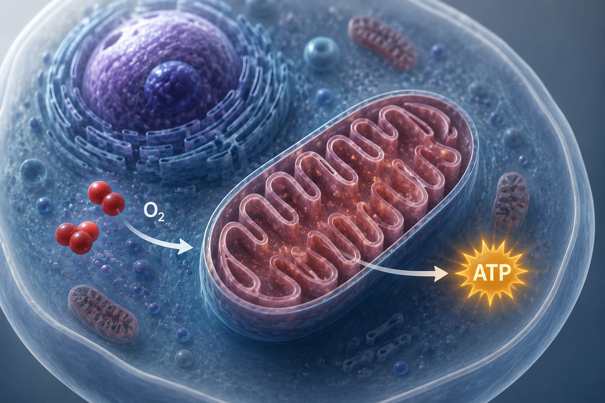
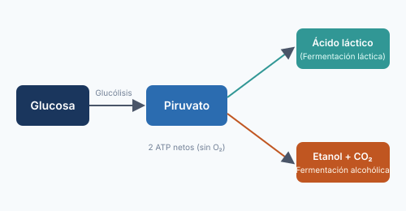
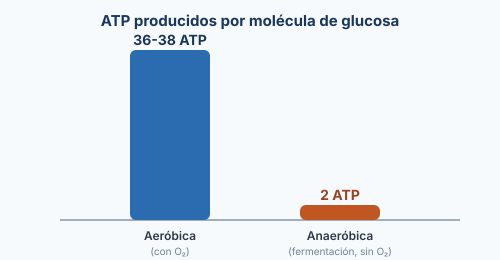

Respiración aeróbica
La respiración aerobia es un proceso metabólico celular en el que la glucosa se oxida por completo para transformarse en energía química utilizable en forma de ATP, utilizando el oxígeno molecular (O₂) como aceptor final de electrones. A nivel molecular, no es solo la acción de respirar aire, sino una serie de reacciones químicas encadenadas (glucólisis, ciclo de Krebs y cadena de transporte de electrones) que extraen la energía almacenada en los enlaces de los nutrientes. Por su alta eficiencia, este proceso produce entre 36 y 38 moléculas de ATP por cada molécula de glucosa.

Respiración anaeróbica (fermentación)
Cuando no hay oxígeno disponible, la célula recurre a la respiración anaeróbica o fermentación. Tras la glucólisis, el piruvato no entra a la mitocondria, sino que se transforma directamente en el citoplasma, regenerando NAD⁺ para que la glucólisis pueda continuar. Existen dos tipos principales: la fermentación láctica, que convierte el piruvato en ácido láctico (ocurre en nuestras células musculares durante el ejercicio intenso y en bacterias usadas para hacer yogur o queso), y la fermentación alcohólica, que lo convierte en etanol y CO₂ (realizada por levaduras en la elaboración de pan, cerveza y vino). Al no usar la cadena de transporte de electrones, este proceso es mucho menos eficiente: solo produce 2 ATP por molécula de glucosa.

Comparación e importancia biológica
La diferencia clave entre ambas vías es la eficiencia energética: la respiración aeróbica libera hasta 18 veces más ATP que la anaeróbica, ya que aprovecha por completo la energía de la glucosa mediante el ciclo de Krebs y la fosforilación oxidativa. Sin embargo, la fermentación tiene una ventaja: es mucho más rápida, lo que permite a nuestras células musculares obtener energía casi instantánea durante esfuerzos breves e intensos, aunque a costa de acumular ácido láctico (causante de la fatiga muscular). A escala industrial, la fermentación anaeróbica es la base de alimentos y bebidas como el pan, el yogur, el queso, la cerveza y el vino.

¡Haz clic sobre las opciones para comprobar tus respuestas!
1. ¿Cuántas moléculas de ATP produce la respiración aeróbica por cada glucosa?
2. ¿Qué producto genera la fermentación láctica en nuestros músculos?
Lecturas complementarias para profundizar en el tema:
Video general
¿No carga el video? Ábrelo directamente en YouTube.
Resumen
La respiración celular es el conjunto de reacciones que permiten a las células obtener energía (ATP) a partir de la glucosa. Existen dos rutas principales:
- Respiración aeróbica: requiere oxígeno, ocurre en la mitocondria y produce 36-38 ATP por glucosa.
- Respiración anaeróbica (fermentación): ocurre sin oxígeno, en el citoplasma, y solo produce 2 ATP por glucosa.
- La fermentación láctica genera ácido láctico (músculos, yogur, queso); la fermentación alcohólica genera etanol y CO₂ (pan, cerveza, vino).
- Ambas rutas comparten el primer paso: la glucólisis.